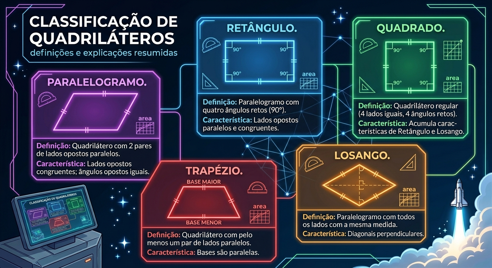
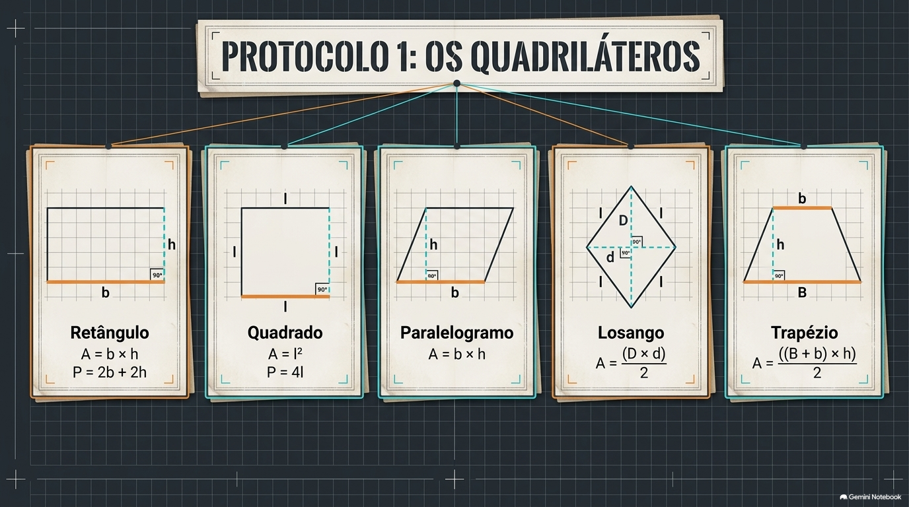

Definição e características
O que é um Quadrilátero?
Um quadrilátero é um polígono plano que possui quatro lados, quatro vértices e quatro ângulos internos. A soma de todos os seus ângulos internos é sempre igual a \(360^\circ\).

Em qualquer quadrilátero convexo, sempre a soma dos ângulos internos será igual a 360º.

Área dos quadriláteros


Guia da Missão: GeoGebra
Nesta etapa, você vai assumir o controle do nosso simulador geométrico!
Siga as instruções abaixo!
📍 Passo 1: Configurando a Figura
Ajustar o Tamanho: Mova os controles deslizantes ou digite o valor exato na caixa de entrada para alterar o tamanho dos lados do quadrilátero.
📍 Passo 2: Investigando o Perímetro e a Área
Ver o Perímetro: Clique no botão de player ao lado do Perímetro para destacar o contorno de forma dinâmica da figura.
Ver a Área: Clique no botão de player ao lado da Área para observar o preenchimento da superfície interna da figura.
https://www.geogebra.org/m/tgnrb68h (Nova Janela)
1. A prefeitura de uma cidade pretende construir uma praça em formato quadrado. Cada lado da praça terá 12 metros de comprimento. Para instalar uma cerca ao redor de toda a praça, será necessário calcular seu perímetro.
Qual será o comprimento total da cerca?
A) 24 metros. B) 36 metros. C) 48 metros. D) 60 metros. E) 144 metros.

2-Mariana possui um jardim retangular em sua casa, com 8 metros de comprimento e 5 metros de largura. Ela deseja colocar grama em toda a superfície do jardim.
Qual será a área total que receberá grama?
A) 13 m². B) 26 m². C) 35 m². D) 40 m². E) 80 m²

3- Um clube deseja construir uma piscina quadrada cuja área será de 81 m². Para colocar uma proteção ao redor da piscina, será necessário descobrir a medida de seu perímetro.
Qual será o perímetro da piscina?
A) 18 metros. B) 27 metros. C) 32 metros. D) 36 metros. E) 40 metros.

4-Uma família comprou um terreno retangular com 20 metros de comprimento e 15 metros de largura. Antes de iniciar a construção da casa, pretende cercar todo o terreno.
Qual será a quantidade de metros de cerca necessária?
A) 35 metros. B) 60 metros. C) 70 metros. D) 150 metros. E) 300 metros.

5-
Uma sala de aula possui formato retangular, com 9 metros de comprimento e 6 metros de altura. A direção da escola deseja instalar um novo piso em toda a sala.
Quantos metros quadrados de piso serão necessários?
A) 15 m². B) 30 m². C) 45 m². D) 54 m². E) 60 m².